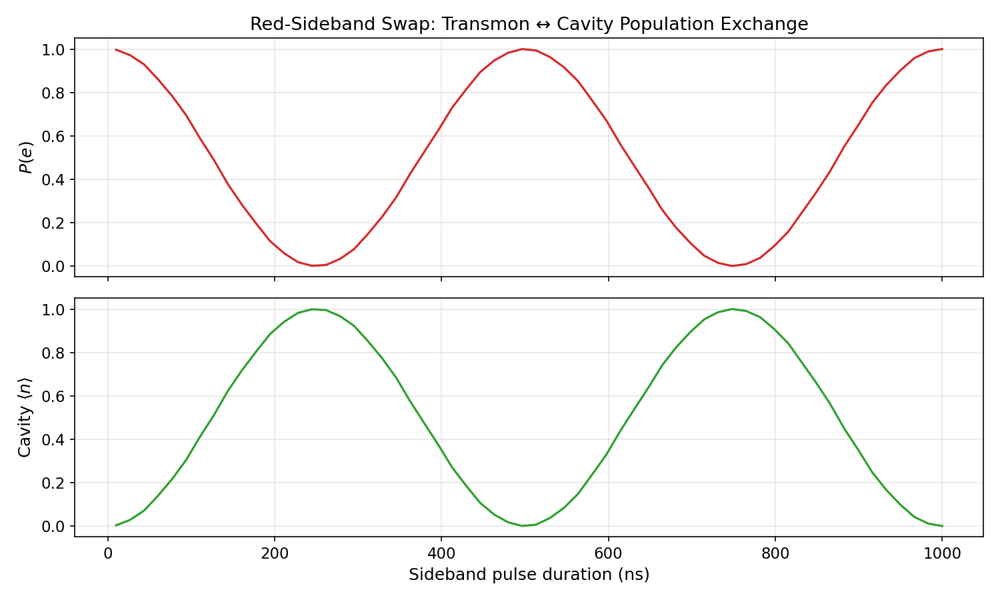

Tutorial: Sideband Swap and Bosonic Protocols¶
This tutorial demonstrates how sideband drives transfer excitations between a transmon qubit and a bosonic storage mode — the fundamental primitive for qubit-to-cavity state transfer in cQED.
Primary workflow notebooks (start here):
tutorials/20_bosonic_and_sideband/01_sideband_swap.ipynbtutorials/20_bosonic_and_sideband/02_detuned_sideband_synchronization.ipynbtutorials/20_bosonic_and_sideband/03_sequential_sideband_reset.ipynbtutorials/20_bosonic_and_sideband/04_shelving_isolation.ipynb
Foundational background:
tutorials/24_sideband_like_interactions.ipynb
Physics Background¶
Energy-Matching: The Sideband Condition¶
The transmon-cavity system has two independent degrees of freedom — the transmon and the storage cavity — each with their own energy ladder. A sideband drive couples different rungs of these two ladders simultaneously.
The photon energy of the drive must match the net energy exchange:
- Red sideband (lower transmon, remove photon): \(\omega_{\text{drive}} = \omega_{ge} - \omega_c\) The drive excites the transmon from \(|g\rangle\) to \(|e\rangle\) while removing a photon from the cavity
- Blue sideband (excite both): \(\omega_{\text{drive}} = \omega_{ge} + \omega_c\) The drive excites the transmon and adds a photon to the cavity simultaneously
In the rotating frame matched to both \(\omega_q\) and \(\omega_c\), the red-sideband drive at \(\omega_{\text{drive}} = \omega_{ge} - \omega_c\) becomes resonant with the \(|g, n+1\rangle \leftrightarrow |e, n\rangle\) manifold.
Sideband Hamiltonian¶
In the rotating frame, the effective sideband coupling is:
where \(|\ell\rangle\) and \(|u\rangle\) are the lower and upper transmon levels, \(a_m\) is the bosonic mode annihilation operator, and \(\varepsilon(t)\) is the slowly-varying drive envelope. This Hamiltonian directly couples the state \(|\ell, n+1\rangle\) to \(|u, n\rangle\) — a resonant exchange between transmon excitation and a single cavity photon.
Two-Level Rabi Oscillation¶
In the \(\{|e, 0\rangle, |g, 1\rangle\}\) subspace (simplest case), the Hamiltonian reduces to:
This is a resonant two-level system with Rabi frequency \(\Omega_{\text{sb}} = |\varepsilon|\). The populations oscillate as:
A complete swap (\(|e,0\rangle \to |g,1\rangle\)) occurs at \(t_{\text{swap}} = \pi / (2\Omega_{\text{sb}})\).
Multi-Level Extensions: \(|f, 0\rangle \leftrightarrow |g, 1\rangle\)¶
In the three-level transmon (\(|g\rangle, |e\rangle, |f\rangle\)), the red sideband can couple the \(f\)-state:
This is often more useful than the \(g\)–\(e\) sideband because:
- The \(f\) level is at a distinct frequency, reducing drive crosstalk
- Storage of \(|f\rangle\) into the cavity leaves the qubit in \(|g\rangle\), which can then be re-used
- Sequential \(|e\rangle \to |f\rangle\) + sideband can create arbitrary cavity Fock states
Setup¶
import numpy as np
from cqed_sim.core import (
DispersiveTransmonCavityModel,
FrameSpec,
SidebandDriveSpec,
carrier_for_transition_frequency,
)
model = DispersiveTransmonCavityModel(
omega_c = 2 * np.pi * 5.0e9,
omega_q = 2 * np.pi * 6.0e9,
alpha = 2 * np.pi * (-200e6),
chi = 2 * np.pi * (-2.84e6),
n_cav = 8,
n_tr = 3, # Need ≥ 3 levels for f-g sideband
)
frame = FrameSpec(
omega_c_frame = model.omega_c,
omega_q_frame = model.omega_q,
)
Building a Sideband Pulse¶
from cqed_sim.pulses import build_sideband_pulse
target = SidebandDriveSpec(
mode = "storage",
lower_level = 0, # g
upper_level = 1, # e
sideband = "red",
)
# Get the sideband transition frequency in the rotating frame
omega_sb = model.sideband_transition_frequency(
cavity_level = 0,
lower_level = 0,
upper_level = 1,
sideband = "red",
frame = frame,
)
pulses, drive_ops, meta = build_sideband_pulse(
target,
duration_s = 500e-9,
amplitude_rad_s = 2 * np.pi * 1e6,
channel = "sideband",
carrier = carrier_for_transition_frequency(omega_sb),
)
Here the tutorial stays in the effective rotating-frame sideband language and converts the already-reduced sideband transition frequency directly into the raw low-level carrier. For qubit-only or cavity-only public tone frequencies, prefer the positive drive_frequency_for_transition_frequency(...) helper layer.
Running the Simulation¶
from cqed_sim.core import (
StatePreparationSpec, qubit_state, fock_state, prepare_state,
)
from cqed_sim.sequence import SequenceCompiler
from cqed_sim.sim import SimulationConfig, simulate_sequence
# Start with qubit excited, cavity empty: |e, 0⟩
initial = prepare_state(
model,
StatePreparationSpec(qubit=qubit_state("e"), storage=fock_state(0)),
)
compiled = SequenceCompiler(dt=2e-9).compile(pulses, t_end=550e-9)
result = simulate_sequence(
model, compiled, initial, drive_ops,
config=SimulationConfig(frame=frame, store_states=True),
)
Observing the Swap¶
from cqed_sim.sim import reduced_qubit_state, reduced_cavity_state
import numpy as np
rho_q = reduced_qubit_state(result.final_state)
rho_c = reduced_cavity_state(result.final_state)
pe = float(np.real(rho_q[1, 1]))
n_s = float(np.real(np.trace(
np.diag(np.arange(model.n_cav, dtype=float)) @ np.array(rho_c)
)))
print(f"Transmon P(e): {pe:.3f}")
print(f"Storage ⟨n⟩: {n_s:.3f}")
A successful red sideband swap: \(P(e) \to 0\), cavity \(\langle n\rangle \to 1\).
Population Dynamics vs. Pulse Duration¶
Sweeping the sideband pulse duration reveals the Rabi oscillation:

The qubit excited-state probability \(P(e)\) (top panel) drops as the cavity photon number \(\langle n \rangle\) (bottom panel) rises. At the half-period \(t_{\text{swap}} = \pi/(2\Omega_{\text{sb}})\) the transfer is complete; continued driving reverses it.
Extended Sideband Tutorials¶
Detuned Sideband Synchronization¶
tutorials/20_bosonic_and_sideband/02_detuned_sideband_synchronization.ipynb
When the sideband drive is off-resonance by detuning \(\delta\), the effective Rabi frequency becomes \(\tilde{\Omega} = \sqrt{\Omega_{\text{sb}}^2 + \delta^2}\) and the maximum transfer is reduced to \(P_{\text{max}} = \Omega_{\text{sb}}^2 / \tilde{\Omega}^2 < 1\). The notebook explores the synchronization conditions under which multi-tone drives at different detunings can be made to constructively interfere, restoring full transfer fidelity.
Sequential Sideband Reset¶
tutorials/20_bosonic_and_sideband/03_sequential_sideband_reset.ipynb
A storage cavity initially in an unknown state can be reset to vacuum by a sequential protocol:
- Drive the \(|e, n\rangle \to |g, n+1\rangle\) red sideband (transfers cavity photons to transmon)
- Apply a \(\pi\)-pulse on the qubit (\(|e\rangle \to |g\rangle\)) to remove the transmon excitation
- Repeat for decreasing \(n\)
Each cycle reduces the mean photon number. The notebook demonstrates the protocol with and without cavity ringdown, and compares the reset fidelity as a function of the number of cycles.
Shelving Isolation¶
tutorials/20_bosonic_and_sideband/04_shelving_isolation.ipynb
In a three-level transmon, it is possible to selectively couple one transmon branch while shelving another:
- Excite the \(|e\rangle \to |f\rangle\) transition
- Drive the \(|f, n\rangle \to |g, n+1\rangle\) sideband: only the \(f\)-branch transfers into the cavity
- The \(|g\rangle\) branch remains undisturbed
This allows selective state transfer that is insensitive to the \(|g\rangle\) population — important for protocols where the \(|g\rangle\) and \(|e\rangle\) branches must be treated independently.
Open-System Degradation¶
tutorials/30_advanced_protocols/02_open_system_sideband_degradation.ipynb
Real sideband operations are degraded by:
- Transmon \(T_1\): spontaneous emission during the sideband pulse
- Transmon \(T_2\): pure dephasing reduces coherence of the transferred state
- Cavity photon loss: cavity decay rate \(\kappa\) reduces occupation during the swap
- Thermal excitations: finite temperature causes unwanted re-excitation
The notebook compares closed-system (ideal) vs. open-system (Lindblad) sideband dynamics and quantifies the degradation as a function of each noise parameter.
Existing Examples¶
tutorials/20_bosonic_and_sideband/01_sideband_swap.ipynb— basic sideband swap (\(|f,0\rangle \leftrightarrow |g,1\rangle\))tutorials/20_bosonic_and_sideband/02_detuned_sideband_synchronization.ipynb— detuned sideband synchronizationtutorials/20_bosonic_and_sideband/03_sequential_sideband_reset.ipynb— sequential storage resettutorials/20_bosonic_and_sideband/04_shelving_isolation.ipynb— shelving with a multilevel sidebandtutorials/30_advanced_protocols/02_open_system_sideband_degradation.ipynb— sideband with open-system noiseexamples/sideband_swap.py— compact standalone sideband swap script
See Also¶
- Cross-Kerr Interaction — conditional phase accumulation without photon transfer
- Floquet Driven Systems — periodic-drive perspective on sideband transitions
- Open System Dynamics — Lindblad dissipators for noise modeling